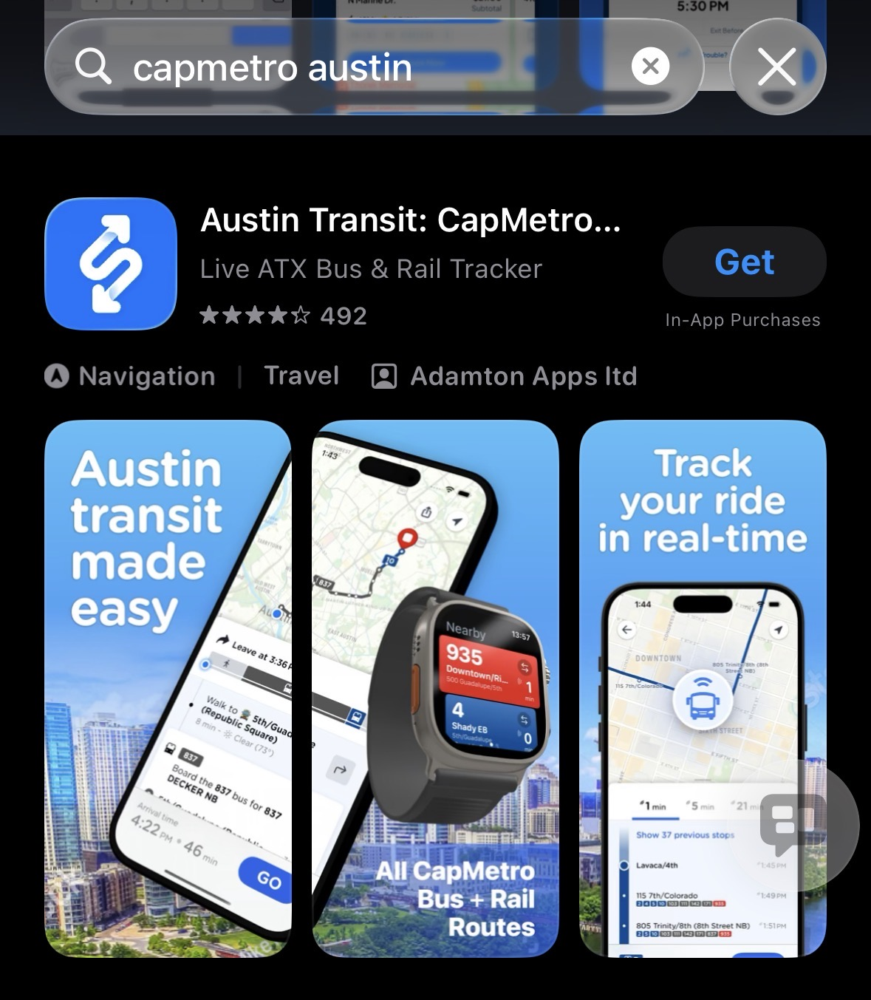

UT operates its own shuttle system connecting campus, housing, and nearby areas. Routes, schedules, and live tracking are on the official UT Parking & Transportation site.
UT Shuttle Routes & SchedulesUT students ride Capital Metro (CapMetro) buses and trains for free with a valid UT ID. Use the CapMetro app to plan trips, check real-time arrivals, and buy/validate fares (including MetroRail).

CapMetro App — trip planning & fares
内容来源: UT Parking & Transportation, CapMetro | 更新时间: 2026年8月
(Sources: UT Parking & Transportation, CapMetro | Last Updated: August 2026)
官方最新信息请以 UT Parking & Transportation 为准
(For official latest info, refer to UT Parking & Transportation)